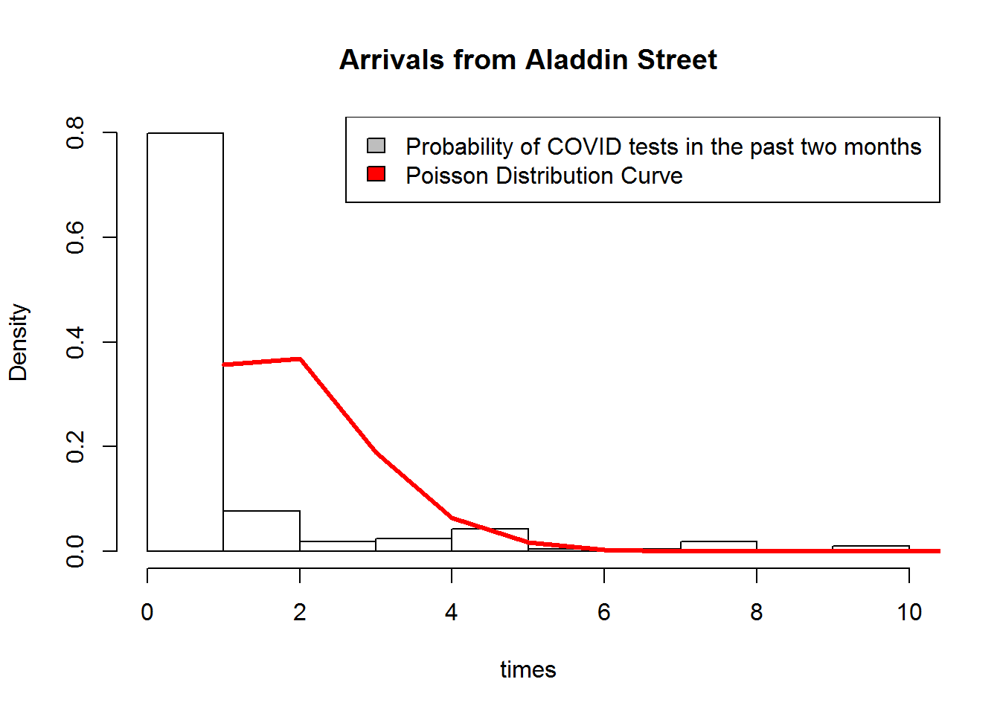
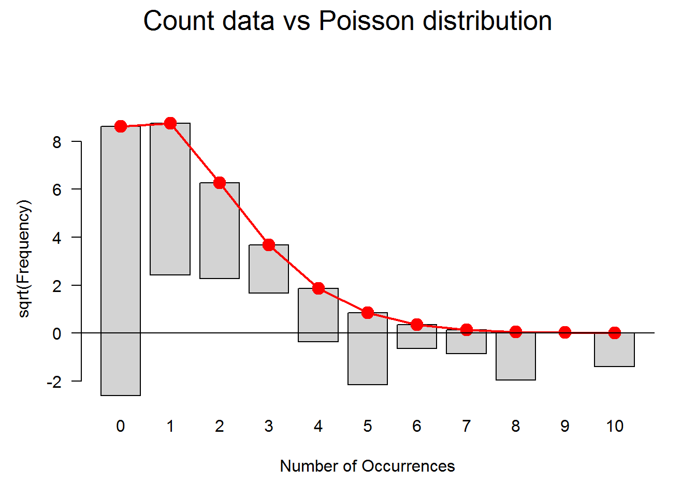
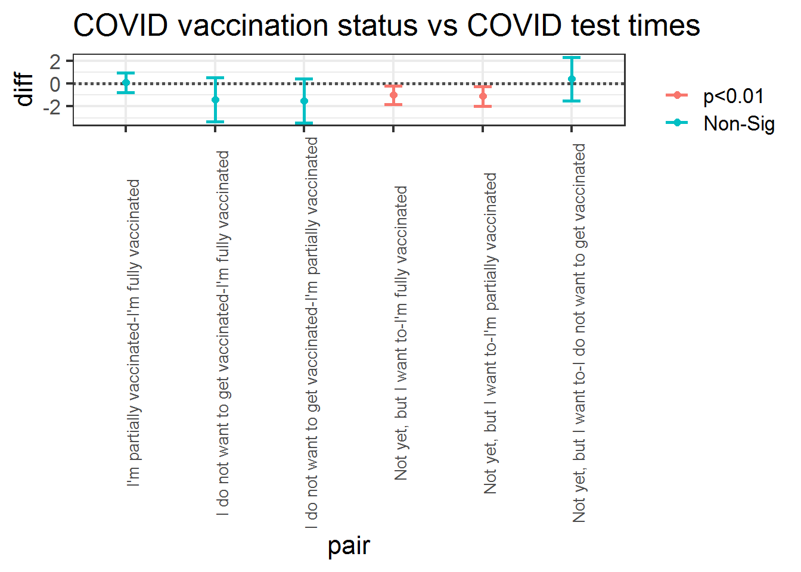
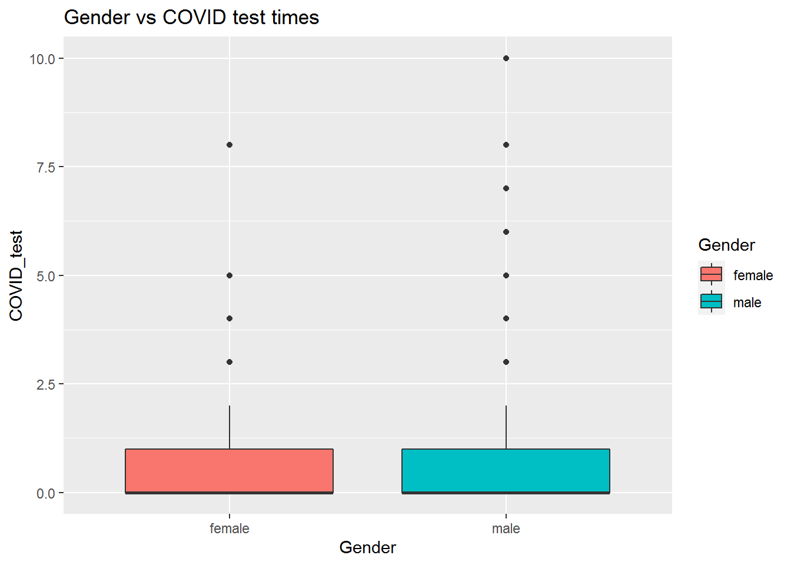

I use goodfit which tests for discrete data in vcd package, and found pValue <0.05, so refuse H0 which means the number of COVID tests a student has taken in the past two months does’t follow a Poisson distribution.
DATA2x02 <- read_csv("./DATA2x02 survey (Responses) - Form responses 1.csv")
DATA2x02 <-DATA2x02[which(!is.na(DATA2x02[,2])),]
COVID_tests_number = DATA2x02[which(!is.na(DATA2x02[,2])),2][[1]]
hist(COVID_tests_number, xlab="times",probability = TRUE, main = "Arrivals from Aladdin Street")
lines(dpois(x=min(COVID_tests_number):max(COVID_tests_number), lambda=mean(COVID_tests_number)), col=2,lwd=3)
legend("topright", c("Probability of COVID tests in the past two months ", "Poisson Distribution Curve"), fill=c(col=16, col=2))
gf <- goodfit(COVID_tests_number,type= "poisson")
summary(gf)##
## Goodness-of-fit test for poisson distribution
##
## X^2 df P(> X^2)
## Likelihood Ratio 208.5202 8 1.021368e-40plot(gf,main="Count data vs Poisson distribution")
H0: COVID vaccination status have the same COVID test times.
H1: COVID vaccination status have different COVID test times
I use analysis of variance to test if different COVID vaccination status have the same COVID test times, and found pValue is 0.00107 which is significant less than 0.05, so refuse H0, and different COVID vaccination status have different COVID test times. In addition, the COVID vaccination status of ‘Not yet, but I want to’ is significally different with that of ‘I’m fully vaccinated’ and ‘I’m partially vaccinated’.
candidateData <- DATA2x02[,c(2,7,8,12,14,17,18,24)]
colnames(candidateData) <-c("COVID_test","mathematical","R_coding","COVID_vaccination","Gender","stressed","loneliness","exercising")
library(ggplot2)
aov1 <- aov(COVID_test ~ COVID_vaccination, candidateData)
summary(aov1)## Df Sum Sq Mean Sq F value Pr(>F)
## COVID_vaccination 3 58.5 19.501 5.578 0.00107 **
## Residuals 202 706.3 3.496
## ---
## Signif. codes: 0 '***' 0.001 '**' 0.01 '*' 0.05 '.' 0.1 ' ' 1
## 2 observations deleted due to missingnesstukey <- TukeyHSD(aov1)
tukey = as.data.frame(tukey$COVID_vaccination)
tukey$pair = rownames(tukey)
ggplot(tukey, aes(colour=cut(`p adj`, c(0, 0.01, 0.05, 1),
label=c("p<0.01","p<0.05","Non-Sig")))) +
theme_bw(base_size = 16)+
geom_hline(yintercept=0, lty="11", colour="grey30",size = 1) +
geom_errorbar(aes(pair, ymin=lwr, ymax=upr), width=0.2,size = 1) +
geom_point(aes(pair, diff),size = 2) +
labs(colour="")+
theme(axis.text.x = element_text(size =10,angle=90)) +
ggtitle('COVID vaccination status vs COVID test times')
H0: different gender have the same COVID test times.
H1: different gender have different COVID test times
I use analysis of variance to test if different Gender have the same COVID test times, and found pValue is 0.689 which is not significant less than 0.05, so recieve H0, and different gender have the same COVID test times.
table(candidateData$Gender)##
## f F Famale Femal female Female
## 1 1 1 1 27 41
## M male Male MALE man Man
## 4 33 88 1 1 2
## Non-binary Woman Woman/Female
## 1 2 1pos1 <-which(candidateData$Gender%in%c("f","F","Famale","Femal","female","Female","Woman"))
pos2 <-which(candidateData$Gender%in%c("M","male","Male","MALE","man","Man"))
candidateData[pos1,"Gender"] <-"female"
candidateData[pos2,"Gender"] <-"male"
pos <-which(candidateData$Gender%in%c("female","male"))
candidateData2 <-candidateData[pos,]
aov2 <- aov(COVID_test ~ Gender, candidateData2)
summary(aov2)## Df Sum Sq Mean Sq F value Pr(>F)
## Gender 1 0.6 0.610 0.161 0.689
## Residuals 201 760.9 3.786ggplot(candidateData2, aes(x=Gender, y=COVID_test, fill=Gender)) +
geom_boxplot() +
ggtitle('Gender vs COVID test times')
In this assignment, we found the following conlusions:
The following References I used: